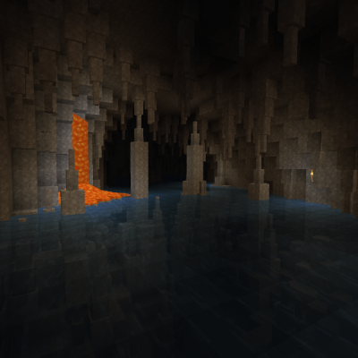

Під час дослідження ти можеш натрапити на великі водойми: річки, озера чи величезні океани. Річки та озера містять прісну воду, але ж океани містять солону. Вживання прісної води може відновити твою спрагу, однак вживання солоної води спрагу виснажить.
Річка.
Річки в TerraFirmaCraft мають течію. Течія штовхає предмети, гравців та сутності, так само, як вода, що розтікається. Річкові течії прямують до океанів, з'єднуючись з іншими річками на своєму шляху. Іноді річки зникають під землею. В цьому випадку можна побачити величезні печерні та підземні озера, що згодом знаходять таки шлях до океану.
Фрагмент підземної ріки.
Озера та річки можуть бути джерелом деяких ресурсів. Один з них – невеликі рудні родовища. Гравій з дрібними вкрапленнями руд можна знайти на дні річок і озер. Цей гравій можна промити для отримання невеликої кількості руди. Таким чином можна знайти самородну мідь, самородне срібло, самородне золото та каситерит.
Родовище самородного золота у глинистому сланці.
Окрім покладів гравійної руди, озера також можуть приховувати скупчення деяких дорогоцінних каменів. Аметисти та опали можна знайти у поверхневих рудних жилах під озерами та річками.
Блок аметистової руди у вапняку.